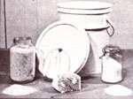
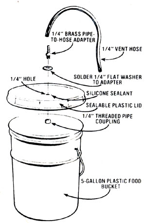

The "classic" moonshiner's mash barrel usually had a capacity of approximately 55 gallons, but such containers-whether wooden, plastic, or metal-either require preparation and sealing or are too expensive for most folks to bother with. Besides, that quantity could prove somewhat wasteful while mash and alcohol production are still in the experimental (and prone to an occasional mistake) stage.
So we've designed an easy-to-make, smaller unit ... which is based upon a container that can be had for little (or no!) money. Our "barrel" is nothing more than a slightly modified fivegallon sealable bucket ... the type commonly used by wholesale food distributors to supply restaurants with pickles, cole slaw, potato salad, and the like. After the eateries have emptied them, they usually throw such containers away ... or sell them for as litt le as $1 .00 apiece.
To convert your container into a mash barrel, simply drill a 1/4" hole in its lid, then get yourself a 1/4" brass pipe-to-hose adapter, and solder or braze a 1/4" flat washer to the shoulder of its threaded side. Next, cut a short length of 1/4" threaded coupling (which will serve as your nut), put a small amount of silicone sealant on the face of the washer, slip the adapter into the hole in the lid (with the hose fitting on the outside), and fasten it in place with the threaded coupling. Finally, attach a 3-foot length of 1/4" hose to the fitting on the bucket's cover.
Now you're all set to make some mash ... but before you do, be certain that the barrel is clean by washing it with a diluted bleach solution (a 10-to-1 water-to-whitener mix is fine), and then rinse it thoroughly in warm tap water. After your mash mixture is sealed In the container, drop the free end of the vent hose into a jar full of water (the tube will then allow the gases from the fermentation process to bubble out but won't let any air back into the barrel).
For a more convenient arrangement, you can purchase what is called a fermentation lock (a self-contained air trap) from your local winemaking supply shop or by mail-for $1.50 postpaid-from THE Mother Earth News (restricted) ", P.O. Box 70, Hendersonville, North Carolina 28739.
|
 The bucket and ingredients, ready to go |
 |
|